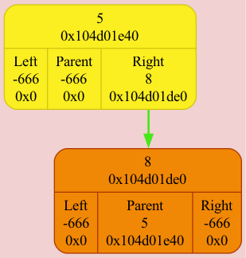
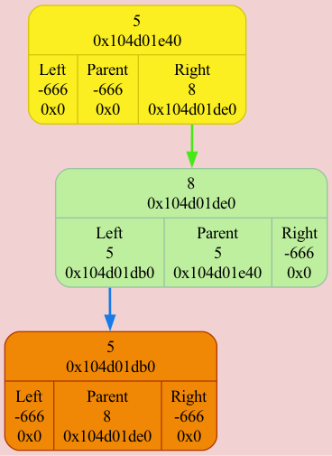
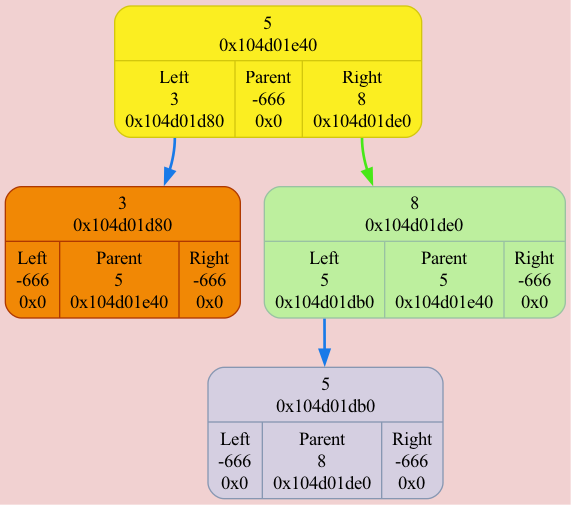
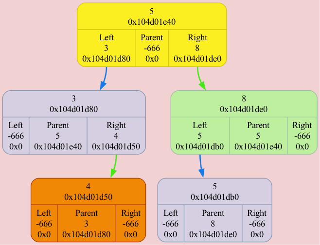
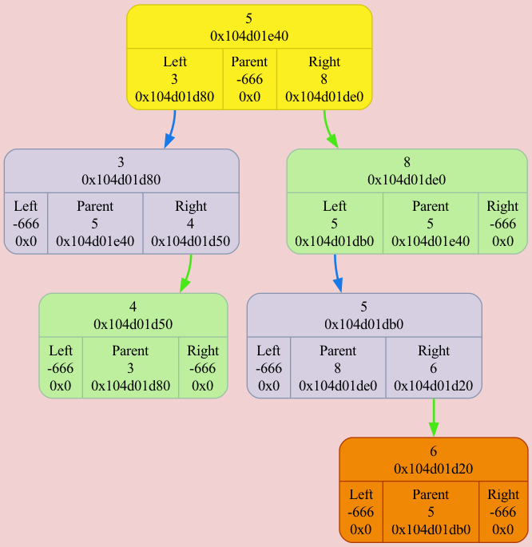
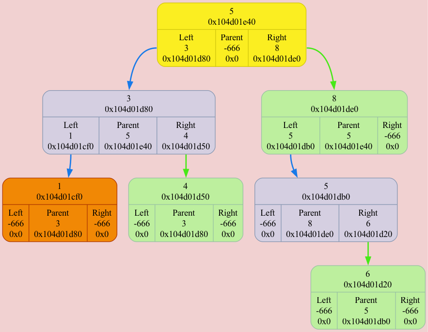
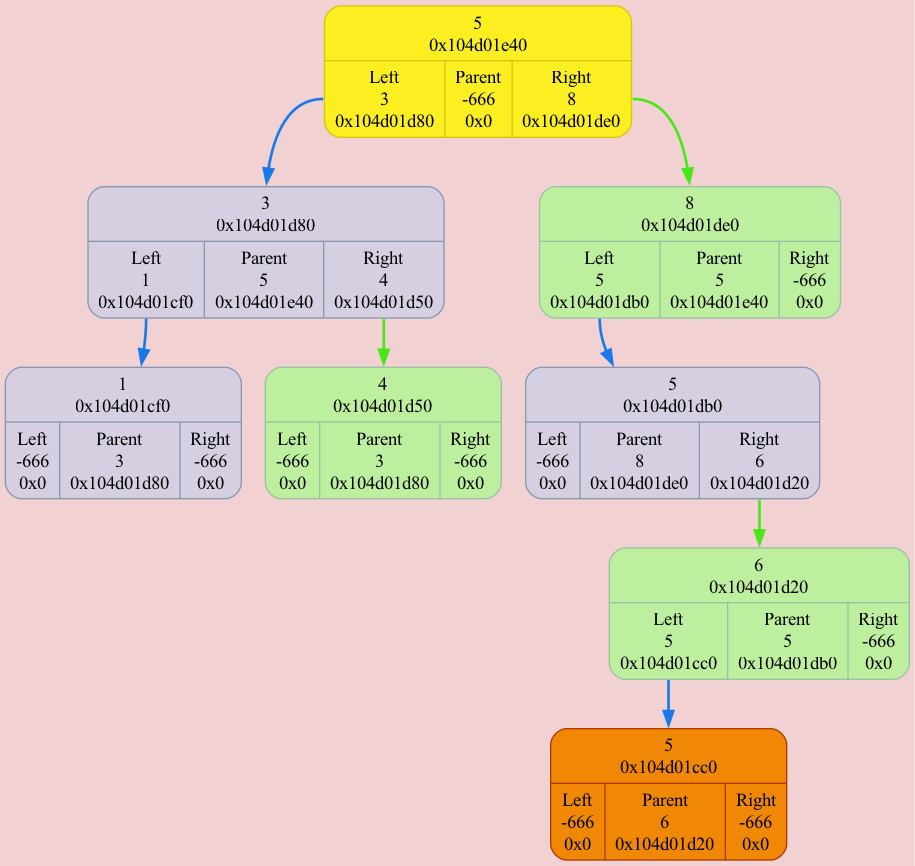
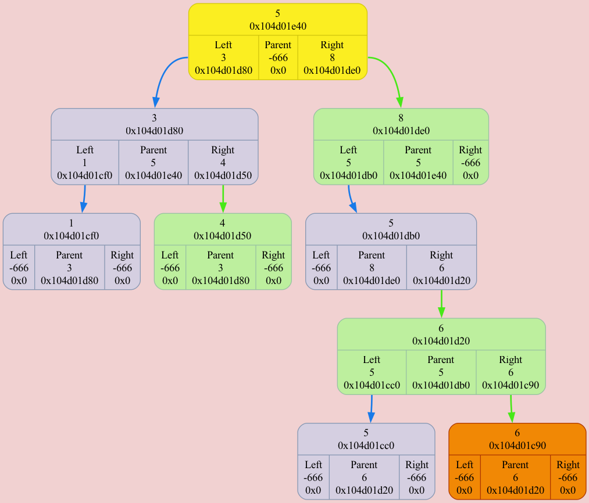
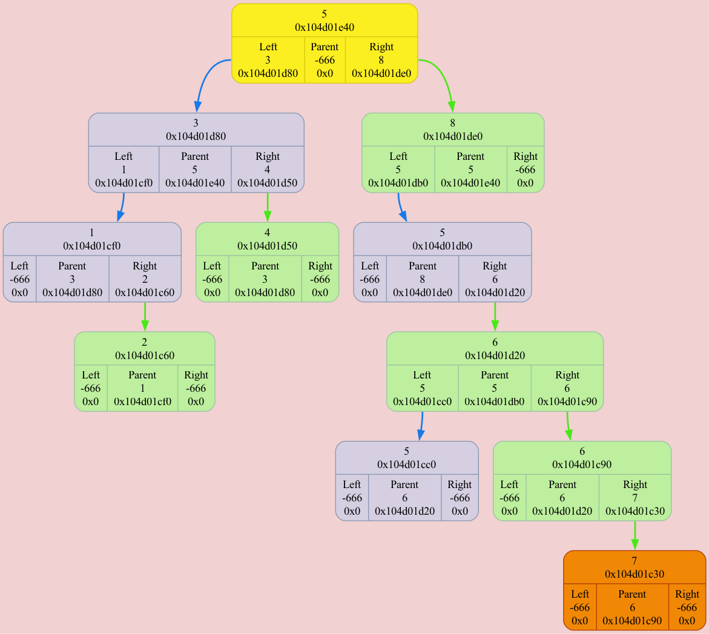

Colors meanings:
Binary Tree[0x16dc3f1b0] born at "/Users/anatolij/Documents/GitHub/BinaryTree/source/main.cpp": 11, name 'tree'
left subtree node
⮑ left subtree edge
right subtree node
⮑ right subtree edge
root node
new node
DUMP #1: function INSERT_IN_TREE was called from /Users/anatolij/Documents/GitHub/BinaryTree/source/main.cpp: 16

DUMP #2: function INSERT_IN_TREE was called from /Users/anatolij/Documents/GitHub/BinaryTree/source/main.cpp: 16

DUMP #3: function INSERT_IN_TREE was called from /Users/anatolij/Documents/GitHub/BinaryTree/source/main.cpp: 16

DUMP #4: function INSERT_IN_TREE was called from /Users/anatolij/Documents/GitHub/BinaryTree/source/main.cpp: 16

DUMP #5: function INSERT_IN_TREE was called from /Users/anatolij/Documents/GitHub/BinaryTree/source/main.cpp: 16

DUMP #6: function INSERT_IN_TREE was called from /Users/anatolij/Documents/GitHub/BinaryTree/source/main.cpp: 16

DUMP #7: function INSERT_IN_TREE was called from /Users/anatolij/Documents/GitHub/BinaryTree/source/main.cpp: 16

DUMP #8: function INSERT_IN_TREE was called from /Users/anatolij/Documents/GitHub/BinaryTree/source/main.cpp: 16

DUMP #9: function INSERT_IN_TREE was called from /Users/anatolij/Documents/GitHub/BinaryTree/source/main.cpp: 16

DUMP #10: function INSERT_IN_TREE was called from /Users/anatolij/Documents/GitHub/BinaryTree/source/main.cpp: 16

DUMP #11: function INSERT_IN_TREE was called from /Users/anatolij/Documents/GitHub/BinaryTree/source/main.cpp: 16
